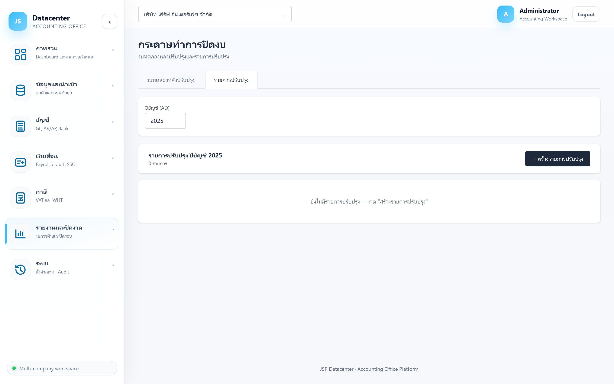
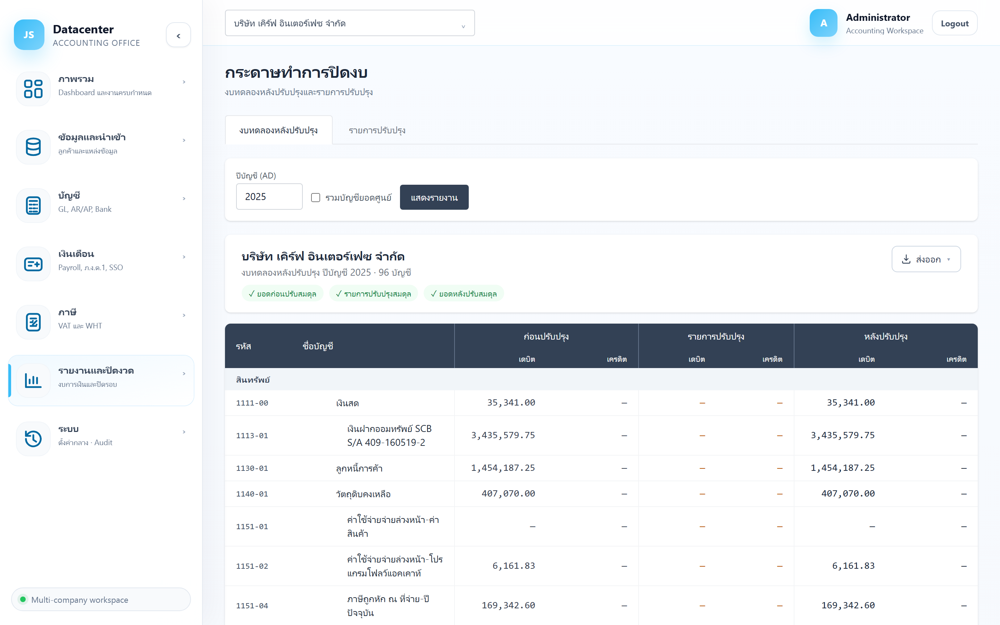

กระดาษทำการปิดงบ
ศูนย์รวมรายการปรับปรุงปิดงบทั้งหมด และงบทดลองที่รวมรายการปรับปรุงแล้ว — เป็นสะพานระหว่าง ยอดตามที่ Express บันทึก กับ ยอดที่จะออกงบการเงินจริง
ข้อมูลจาก Express คือยอดที่บันทึกระหว่างปี แต่ตอนปิดงบต้องปรับอีกหลายอย่าง — ค่าเสื่อมราคา, ตัดจ่ายค่าใช้จ่ายล่วงหน้า, ดอกเบี้ยเช่าซื้อ, ภาษีเงินได้, ค่าธรรมเนียมธนาคาร รายการเหล่านี้มารวมกันที่นี่ โดยไม่แตะข้อมูล Express
1. การเข้าใช้งาน
- เลือกบริษัทลูกค้า ที่แถบด้านบน
- เปิดเมนู รายงานและปิดงวด → กระดาษทำการปิดงบ
- กรอก ปีบัญชี (ค.ศ.) — ใช้ร่วมกันทั้งสองแท็บ
2. แท็บ “รายการปรับปรุง”

| คอลัมน์ | ความหมาย |
|---|---|
| เลขที่ | เลขที่เอกสารปรับปรุงที่ระบบออกให้ |
| วันที่ | วันที่ของรายการ (ปกติคือวันสิ้นรอบบัญชี) |
| ที่มา | บอกว่ารายการนี้มาจากไหน — ดูตารางด้านล่าง |
| เหตุผล | คำอธิบายว่าปรับปรุงเรื่องอะไร |
| จำนวนเงิน | ยอดรวมของใบนั้น |
| แก้ไข / ลบ | ปุ่มท้ายแถว |
| ที่มา | สร้างจากไหน |
|---|---|
| ปรับปรุงด้วยมือ | สร้างเองที่หน้านี้ |
| สินทรัพย์ถาวร | สร้างจากหน้า สินทรัพย์ถาวร (ค่าเสื่อมราคา) |
| สัญญาเช่า / เงินกู้ | สร้างจากหน้า เช่าซื้อ / เงินกู้ (ดอกเบี้ยรับรู้) |
| ภาษี | สร้างจากหน้า ภ.ง.ด.50 ตอนกด “บันทึก + ลงภาษีในงบ” |
| อื่น ๆ | เช่น รายการปรับปรุงจากการกระทบยอด ธนาคาร |
รายการปรับปรุงที่พบบ่อยที่สุด (ค่าเสื่อม, ตัดจ่ายล่วงหน้า, ดอกเบี้ย, ภาษี, ค่าธรรมเนียมธนาคาร) สร้างได้จากหน้าเฉพาะของงานนั้นแล้วมาโผล่ที่นี่ — หน้านี้ใช้ ตรวจ แก้ และเพิ่มรายการที่เหลือ
สร้างรายการปรับปรุงเอง
กด + สร้างรายการปรับปรุง จะได้ฟอร์ม
| ช่อง | คำอธิบาย |
|---|---|
| วันที่ | วันที่ของรายการ |
| ที่มา | เลือกประเภทที่มา (ปกติใช้ “ปรับปรุงด้วยมือ”) |
| อ้างอิง | เลขที่เอกสารอ้างอิงภายนอก |
| ไฟล์แนบ (พาธ) | ตำแหน่งไฟล์หลักฐานประกอบ |
| รายการบรรทัด | บัญชี · เดบิต · เครดิต · คำอธิบาย — เพิ่มได้หลายบรรทัด |
ทุกใบต้องดุลตามหลักบัญชีคู่ ไม่งั้นบันทึกไม่ผ่าน — และรายการนี้จะไปกระทบงบการเงินจริง ให้ระบุเหตุผลชัดเจนเสมอเพื่อให้ผู้สอบบัญชีตามได้
3. แท็บ “งบทดลองหลังปรับปรุง”
กรอกปี (ติ๊ก “รวมบัญชียอดศูนย์” ถ้าต้องการ) แล้วกด แสดงรายงาน

| กลุ่มคอลัมน์ | ความหมาย |
|---|---|
| ก่อนปรับปรุง | ยอดตามที่นำเข้าจาก Express (เดบิต/เครดิต) — ตรงกับ งบทดลอง ปกติ |
| รายการปรับปรุง | ผลรวมของรายการปรับปรุงที่กระทบบัญชีนั้น |
| หลังปรับปรุง | ยอดสุดท้ายที่จะใช้ออกงบการเงิน |
แถวจัดกลุ่มตามหมวดบัญชี 5 หมวดเหมือนงบทดลองปกติ
ไล่ดูเฉพาะแถวที่มีตัวเลขในคอลัมน์กลาง (รายการปรับปรุง) — บัญชีอื่นไม่ถูกแตะ ถ้ามีบัญชีที่ไม่ควรถูกปรับปรุงโผล่มา แปลว่ามีรายการที่ลงบัญชีผิด
4. ลำดับงานปิดงบ
- นำเข้าข้อมูลจาก Express ให้ครบทั้งปีและ post เรียบร้อย
- ตรวจ งบทดลอง ว่าสมดุล
- สร้างรายการปรับปรุงจากหน้าเฉพาะทาง — ค่าเสื่อม · ตัดจ่ายล่วงหน้า · ดอกเบี้ยเช่าซื้อ · ค่าธรรมเนียมธนาคาร
- เพิ่มรายการที่เหลือเอง ที่หน้านี้
- ดูงบทดลองหลังปรับปรุง ตรวจว่ายอดสมเหตุสมผล
- คำนวณภาษี ที่ ภ.ง.ด.50 แล้วกด “บันทึก + ลงภาษีในงบ”
- ออกงบการเงิน และ ปิดรอบบัญชี
เพราะฐานภาษีคือกำไรหลังปรับปรุงทั้งหมดแล้ว — ถ้าเพิ่มรายการปรับปรุงหลังคำนวณภาษี ต้องกลับไปกด “บันทึก + ลงภาษีในงบ” ใหม่
5. ปัญหาที่พบบ่อย
| อาการ | สาเหตุและวิธีแก้ |
|---|---|
| ขึ้น “ยังไม่มีรายการปรับปรุง” | ปีนั้นยังไม่มีรายการ — สร้างจากหน้าเฉพาะทางหรือกดสร้างเองที่นี่ |
| บันทึกไม่ผ่าน | เดบิตไม่เท่ากับเครดิต — ตรวจบรรทัดที่กรอก |
| สร้างค่าเสื่อมซ้ำสองครั้ง | ลบใบที่ซ้ำที่หน้านี้ (ดูจากคอลัมน์ “ที่มา” = สินทรัพย์ถาวร) |
| งบการเงินไม่รวมรายการปรับปรุง | ตรวจว่ารายการอยู่ในปีบัญชีเดียวกับที่ออกงบ — ดูคอลัมน์วันที่ |
| ปรับปรุงแล้วแต่ยอดใน Express ไม่เปลี่ยน | ถูกต้องแล้ว — ระบบไม่เขียนกลับไปที่ Express รายการปรับปรุงมีผลเฉพาะงบที่ออกจากระบบนี้ |